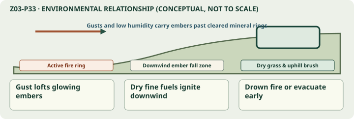

Z03-P33 · Fire and ignition · New manuscript
Recognize wind-driven ember transport and dry-fuel escape hazards
Spot wind gusts, dry fine fuels and convective ember lofting before a small campfire escapes into wildland vegetation.
When it applies · Any outdoor fire site surrounded by dry grass, pine needles, brush or forested ridges.
Equipment · Weather forecast, extinguishing water, shovel/stirring tool and live wind observation.

Actions
- Watch treetops, smoke angle and rising sparks—steady breezes or sudden gusts can carry glowing embers well beyond a cleared mineral ring into dry grass or needle beds downwind.[C18, C02]
- Recognize that fine dead fuels (cured grass, dry pine needles, birch bark curls) ignite within seconds during low relative humidity and spread faster uphill with wind alignment.[C18, C02, C14]
- Keep water and a stirring tool staged outside the smoke path and cancel or drown any campfire the moment gusts lift sparks outside the ring perimeter.[C02, C04, C18]
Failure recognition · Leaving a crackling pine-wood fire unattended for five minutes while an afternoon breeze lifts glowing bark embers into dry grass ten yards downwind.[C02, C04, C18]
Verify · Confirm calm controllable wind, zero escaping sparks and full downwind fuel scan before adding another stick.[C02, C18, ED]
Stop or change course · Any escaping spark into surrounding brush, rising gusts or active Red Flag conditions requires immediate fire extinguishment; if fire spreads beyond instant control, evacuate and call 911.[C04, C18, C19, T02]
Evidence and editorial notes
- C02 · USDA Forest Service / Smokey Bear · Smokey Bear’s Campfire Safety Guide (agency PDF)
- Section: Build your campfire; choose a location · Conditions: Where campfires are currently permitted
Support: Use an established fire ring where required or available. Protect the area from nearby combustible materials, avoid windy conditions and keep water ready.
Limitations: Site clearances vary by fuel load, slope, and wind; no universal safe radius fits all terrain. · Conflicting evidence: None; aligns with USFS-FIRE.
Editorial note: Grounds site-selection and ring-preparation procedures. · Specialist reviewer: Fire prevention and land management
Primary source · checked 2026-11-24 - C04 · USDA Forest Service / Smokey Bear · Smokey Bear’s Campfire Safety Guide (agency PDF)
- Section: Maintain and extinguish a campfire · Conditions: Occupied campfire, water and tools available
Support: Stay with the fire. Drown, stir and add water again until cool. Leaving visible embers or merely covering them is unsafe.
Limitations: Deep duff or peat soils can hold smoldering embers underground even after surface ash cools. · Conflicting evidence: None; prohibits dirt-only burial as primary extinguishment.
Editorial note: Enforces drown-stir-feel-cold cycle before site departure. · Specialist reviewer: Fire prevention and land management
Primary source · checked 2026-11-24 - C14 · USDA Forest Service · Know Before You Go: Fire (current web edition)
- Section: Know Before You Go > Extinguish and Site Clearance · Conditions: Authorized outdoor campfire on mineral soil
Support: Clear flammable grass, needles, and twigs down to mineral soil before building a small fire, keep flames away from overhanging branches, and confirm cold ash before leaving.
Limitations: Root systems and organic duff beneath shallow clearing can ignite invisibly. · Conflicting evidence: None; aligns with SMOKEY C02/C04.
Editorial note: Underpins mineral-soil cutaway and underground root-fire failure cards. · Specialist reviewer: Wildland fire prevention
Primary source · checked 2026-11-24 - C18 · NWS Chicago · Definitions of a Fire Weather Watch and a Red Flag Warning (Current web edition)
- Section: Red Flag Warning and Fire Weather Watch Definitions · Conditions: Local fire weather outlook and land-manager order
Support: A Red Flag Warning means local conditions support extreme fire danger. Check local criteria and restrictions and adjust plans.
Limitations: A wind advisory alone is not a Red Flag Warning or an ignition permit. · Conflicting evidence: See A02 claim audit for boundaries.
Editorial note: Establishes Red Flag / high-wind conditions as automatic no-fire triggers. · Specialist reviewer: Wildland fire safety and meteorology
Primary source · checked 2026-11-25 - C19 · FEMA / Ready.gov · Wildfires (current web edition)
- Section: Wildfires > Stay Safe and Smoke Protection · Conditions: Approaching wildfire or heavy smoke in camp or community
Support: Evacuate early along open routes per official orders, protect airways from heavy smoke, and avoid turning back into active fire corridors.
Limitations: Cloth face coverings do not filter fine wildfire smoke particles; fitted particulate respirators or clean indoor air are distinct interventions. · Conflicting evidence: None; coordinates with NWS-WILDFIRE.
Editorial note: Covers wildfire escape and smoke decision thresholds in Z01/Z03. · Specialist reviewer: Emergency management and fire safety
Primary source · checked 2026-11-24 - T02 · American Red Cross · First Aid Steps (current web edition)
- Section: First Aid Steps > Call 9-1-1 · Conditions: Lay emergency response to unresponsiveness, abnormal breathing or severe bleeding
Support: Activate EMS and get needed equipment. Follow dispatcher directions and act within training.
Limitations: Remote locations may delay EMS arrival, requiring sustained stabilization after activation. · Conflicting evidence: None; aligns with NPS-E.
Editorial note: Mandates early emergency activation and dispatcher adherence. · Specialist reviewer: EMS and wilderness medicine
Primary source · checked 2026-11-24
Source lineage · NWS wildfire weather and Smokey Bear guide; new manuscript · Classification · New manuscript.